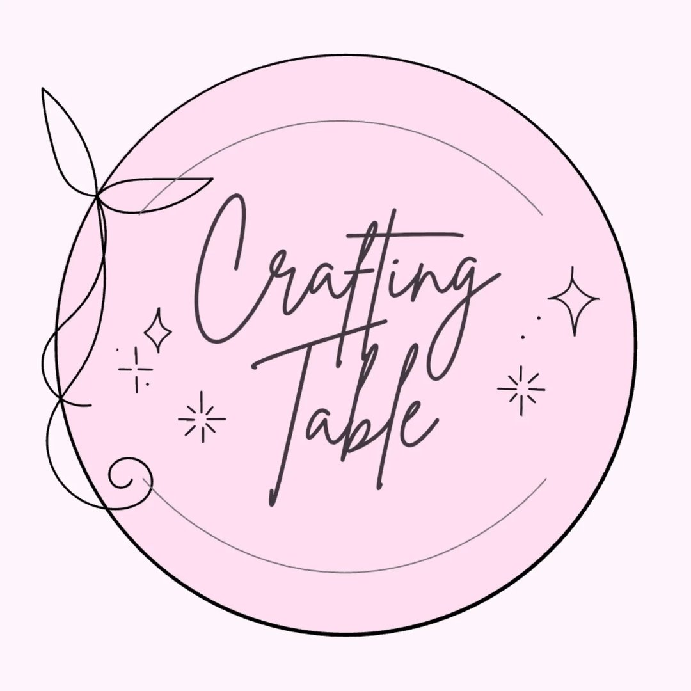

Informativa sulla privacy
Ultimo aggiornamento: 23/11/2026
Italiano
Crafting Table è un'app Android per gestire filati, accessori, peluche, vendite ai mercatini e pattern PDF. È progettata per funzionare offline e senza account.
Titolare del trattamento
Daniele Candiani — yarnestapp@gmail.com
Quali dati gestisce l'app
L'app salva solo sul tuo dispositivo:
- inventario di filati, occhietti e accessori (nomi, colori, quantità, prezzi, note, foto);
- peluche, mercatini, vendite e incassi;
- pattern PDF e relative copertine;
- impostazioni dell'app (lingua, tema, onboarding, protezione doppio tocco, accoppiamento sync).
Non creiamo account e non inviamo questi dati a un nostro server.
Foto e PDF
Le foto vengono scelte con il selettore di sistema e copiate nella memoria privata dell'app. I PDF importati vengono salvati nella memoria privata dell'app. Restano sul dispositivo finché non li elimini o disinstalli l'app.
Riconoscimento degli ordini
L'import degli ordini e il riconoscimento del testo usano ML Kit offline sul dispositivo. Le immagini e il testo analizzati non vengono inviati a noi.
Metriche tecniche di ML Kit
Il riconoscimento del testo è eseguito sul dispositivo da ML Kit (Google). Le immagini e il testo non vengono inviati a Google. ML Kit può comunque inviare a Google metriche tecniche di funzionamento (modello e versione del dispositivo, versione dell'app, identificatori per installazione, tempi di elaborazione, dimensioni di input/output ed errori) per diagnostica e miglioramento del servizio. Questi dati sono cifrati in transito e non vengono usati da Crafting Table per identificarti. Per dettagli: Termini e privacy di ML Kit e Privacy Policy di Google.
Connessione a Internet
Il permesso Internet serve a:
- scaricare le foto dei prodotti quando importi un ordine da un link o da un riepilogo;
- sincronizzare telefono e tablet sulla stessa rete locale o hotspot.
La sincronizzazione è diretta tra i tuoi dispositivi, protetta da un codice di accoppiamento. Non passa da un cloud e non è cifrata con TLS: usala su una rete fidata (casa o hotspot personale).
Backup
Puoi esportare un archivio ZIP con database, foto e PDF. Il file viene salvato nella posizione che scegli tu (Documenti, Drive, ecc.). Sei tu a controllarlo e a decidere dove conservarlo.
Backup automatico di Android
Se il backup di Android/Google è attivo sul dispositivo, il sistema operativo può includere i dati dell'app nel backup del dispositivo. Questo backup è gestito da Android/Google, non da Crafting Table. Puoi disattivarlo dalle impostazioni del telefono.
Dati condivisi con terzi
Non vendiamo, non affittiamo e non condividiamo i tuoi dati con inserzionisti. L'app non contiene pubblicità né crash reporting di terze parti e non usa altri servizi di analytics oltre alle metriche tecniche di ML Kit descritte sopra.
Conservazione e cancellazione
I dati restano sul dispositivo finché elimini le singole voci, usi “Esporta backup” e poi cancelli i dati dalle impostazioni Android, oppure disinstalli l'app. I backup ZIP esportati restano dove li hai salvati finché non li elimini tu.
Diritti (GDPR)
Se sei nell'Unione Europea, hai diritto di accesso, rettifica, cancellazione, limitazione, portabilità e opposizione. Poiché i dati sono sul tuo dispositivo, puoi esercitare questi diritti direttamente dall'app o cancellando i dati dalle impostazioni Android. Per domande scrivi a yarnestapp@gmail.com.
Minori
Crafting Table non è destinata a bambini di età inferiore a 13 anni e non raccoglie consapevolmente dati di minori.
Modifiche
Eventuali modifiche a questa informativa saranno pubblicate su questa pagina con la nuova data di aggiornamento.
English
Crafting Table is an Android app for managing yarn, supplies, plushies, market sales and PDF patterns. It is designed to work offline and without an account.
Data controller
Daniele Candiani — yarnestapp@gmail.com
Data handled by the app
The app stores on your device only:
- yarn, safety eyes and supplies inventory (names, colours, quantities, prices, notes, photos);
- plushies, markets, sales and takings;
- PDF patterns and their covers;
- app settings (language, theme, onboarding, double-tap protection, sync pairing).
We do not create accounts and do not send this data to a server we control.
Photos and PDFs
Photos are chosen with the system picker and copied into the app's private storage. Imported PDFs are stored in the app's private storage. They stay on the device until you delete them or uninstall the app.
Order recognition
Order import and text recognition use ML Kit offline on the device. The analysed images and text are not sent to us.
ML Kit technical metrics
Text recognition is performed on the device by ML Kit (Google). Images and text are not sent to Google. ML Kit may still send Google technical performance metrics (device model and version, app version, per-installation identifiers, processing times, input/output sizes and errors) for diagnostics and service improvement. This data is encrypted in transit and is not used by Crafting Table to identify you. For details: ML Kit terms and privacy and Google's Privacy Policy.
Internet permission
The Internet permission is used to:
- download product photos when you import an order from a link or summary;
- sync phone and tablet over the same local network or hotspot.
Sync is direct between your devices, protected by a pairing code. It does not go through a cloud and is not TLS-encrypted: use it on a trusted network (home or personal hotspot).
Backup
You can export a ZIP archive with the database, photos and PDFs. The file is saved wherever you choose (Documents, Drive, etc.). You control it and decide where to keep it.
Android automatic backup
If Android/Google backup is enabled on the device, the operating system may include app data in the device backup. That backup is handled by Android/Google, not Crafting Table. You can disable it in your phone settings.
Data shared with third parties
We do not sell, rent or share your data with advertisers. The app contains no third-party ads or crash reporting and uses no analytics services other than the ML Kit technical metrics described above.
Retention and deletion
Data stays on the device until you delete individual items, use “Export backup” and then clear the app's data in Android settings, or uninstall the app. ZIP backups you exported stay wherever you saved them until you delete them.
Your rights (GDPR)
If you are in the European Union, you have the right to access, rectify, erase, restrict, port and object. Because the data is on your device, you can exercise these rights directly in the app or by clearing the app's data in Android settings. For questions, write to yarnestapp@gmail.com.
Children
Crafting Table is not intended for children under 13 and does not knowingly collect data from children.
Changes
Any changes to this policy will be published on this page with a new update date.